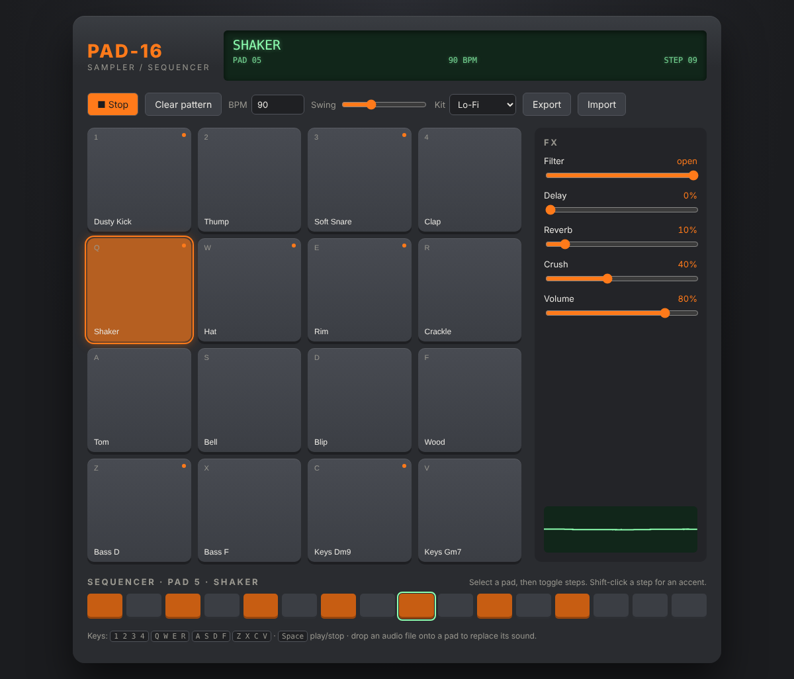
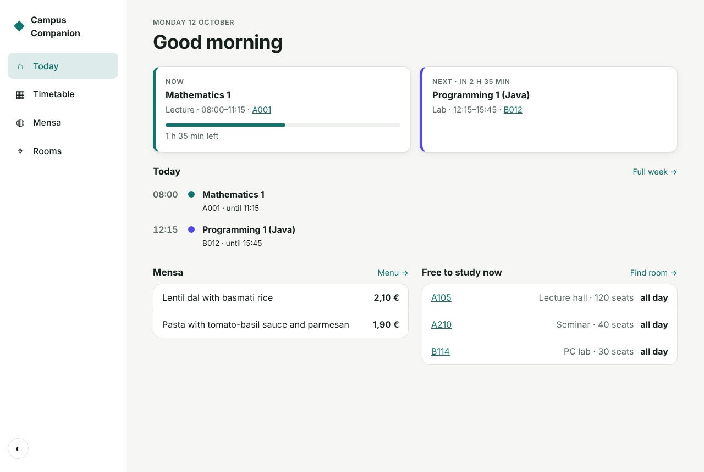

Markos Kontogiorgos
Media Informatics student at BHT Berlin. These projects cover audio programming, interface design and IT automation.

PAD-16 Sampler
16-pad sampler and step sequencer with synthesized kits, effects and your own samples.
Web Audio API · JavaScript

Campus Companion
Timetable with clash detection, Mensa menu and a free-room finder. Mobile-first and offline-capable.
HTML · CSS · JavaScript · PWA
$ itkit authlog /var/log/auth.log SUSPICIOUS IP FAILURES USERNAMES TRIED 203.0.113.45 6 admin, deploy, root 198.51.100.7 5 deploy, oracle, root !! deploy logged in from 198.51.100.7 after repeated failures
itkit
CLI for IT admins: network scan, inventory, AD onboarding, SSH log analysis, certificate checks.
Python · pytest